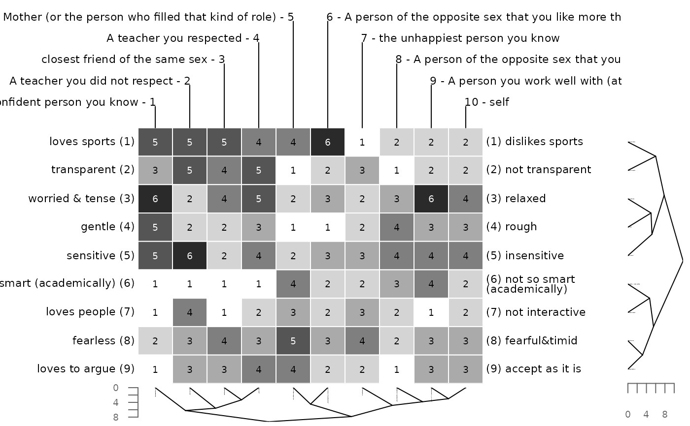
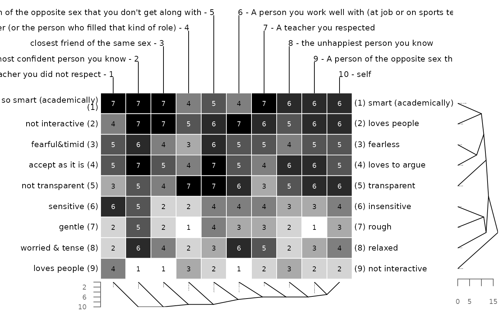
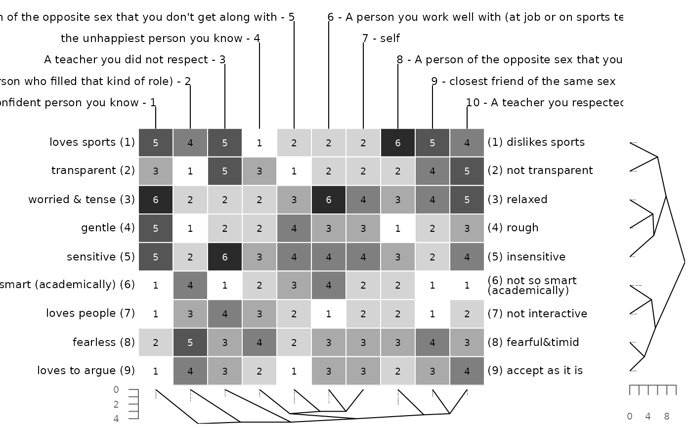
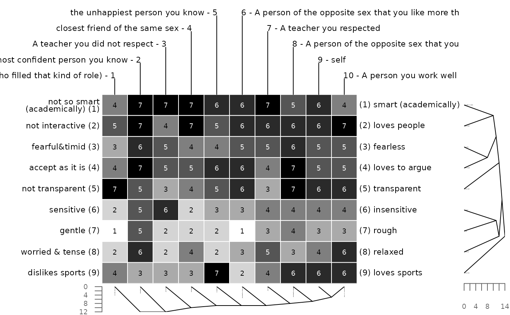
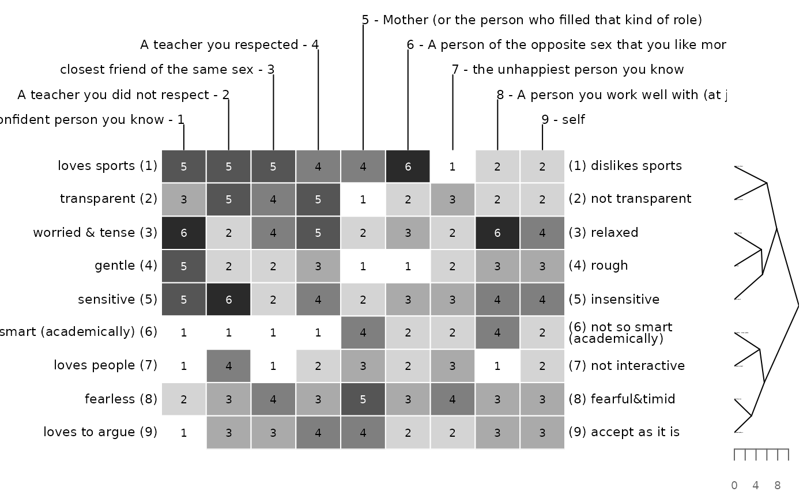
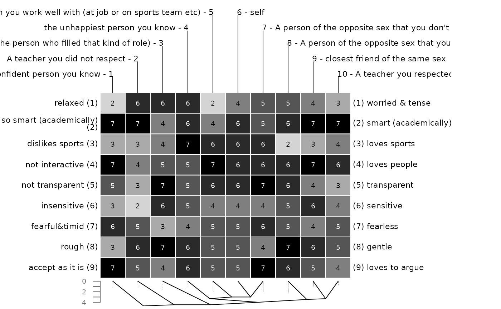
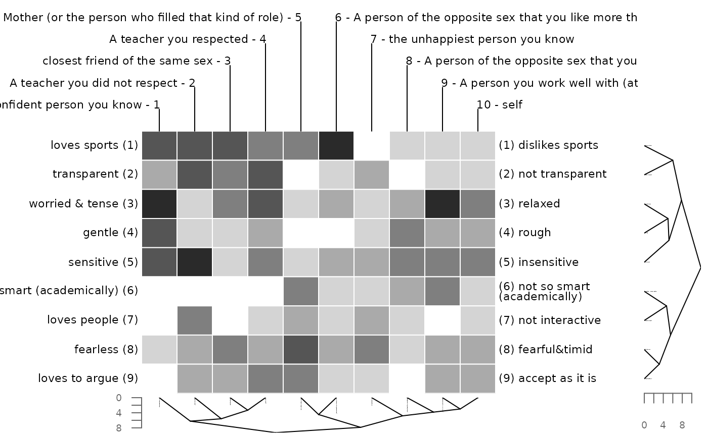
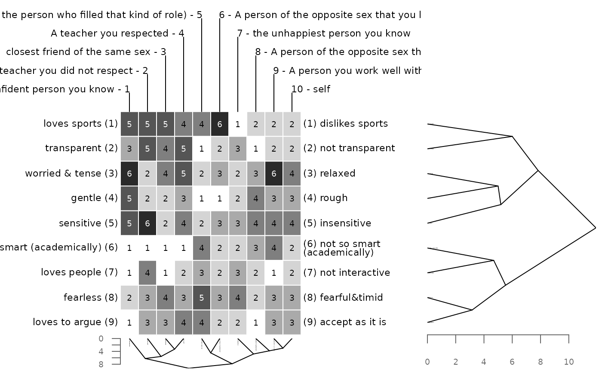
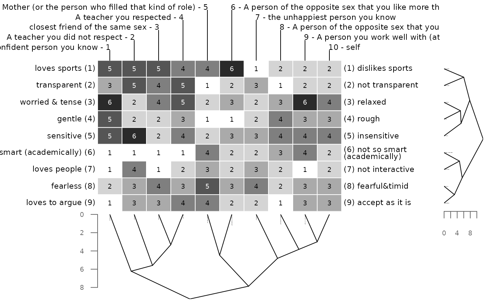

Element columns and constructs rows are ordered according to cluster criterion. Various distance measures as well as cluster methods are supported.
Arguments
- x
repgridobject.- dmethod
The distance measure to be used. This must be one of
"euclidean","maximum","manhattan","canberra","binary", or"minkowski". Default is"euclidean". Any unambiguous substring can be given (e.g."euc"for"euclidean"). A vector of length two can be passed if a different distance measure for constructs and elements is wanted (e.g.c("euclidean", "manhattan")). This will apply euclidean distance to the constructs and manhattan distance to the elements. For additional information on the different types see?dist.- cmethod
The agglomeration method to be used. This should be (an unambiguous abbreviation of) one of
"ward.D","ward.D2","single","complete","average","mcquitty","median"or"centroid". Default is"ward.D". A vector of length two can be passed if a different cluster method for constructs and elements is wanted (e.g.c("ward.D", "euclidean")). This will apply ward clustering to the constructs and single linkage clustering to the elements. If only one of either constructs or elements is to be clustered the valueNAcan be supplied. E.g. to cluster elements only usec(NA, "ward.D").- p
The power of the Minkowski distance, in case
"minkowski"is used as argument fordmethod.pcan be a vector of length two if different powers are wanted for constructs and elements respectively (e.g.c(2,1)).- align
Whether the constructs should be aligned before clustering (default is
TRUE). If not, the grid matrix is clustered as is. See Details section in functioncluster()for more information.- trim
The number of characters a construct is trimmed to (default is
10). IfNAno trimming is done. Trimming simply saves space when displaying the output.- type
Type of dendrogram. Either or
"triangle"(default) or"rectangle"form.- xsegs
Numeric vector of normal device coordinates (ndc i.e. 0 to 1) to mark the widths of the regions for the left labels, for the bertin display, for the right labels and for the vertical dendrogram (i.e. for the constructs).
- ysegs
Numeric vector of normal device coordinates (ndc i.e. 0 to 1) to mark the heights of the regions for the horizontal dendrogram (i.e. for the elements), for the bertin display and for the element names.
- x.off
Horizontal offset between construct labels and construct dendrogram and (default is
0.01in normal device coordinates).- y.off
Vertical offset between bertin display and element dendrogram and (default is
0.01in normal device coordinates).- cex.axis
cexfor axis labels, default is.6.- col.axis
Color for axis and axis labels, default is
grey(.4).- draw.axis
Whether to draw axis showing the distance metric for the dendrograms (default is
TRUE).- ...
additional parameters to be passed to function
bertin().
Value
A list of two hclust() object, for elements and constructs
respectively.
Examples
# default is euclidean distance and ward clustering
bertinCluster(bell2010)
### applying different distance measures and cluster methods
# euclidean distance and single linkage clustering
bertinCluster(bell2010, cmethod = "single")

# manhattan distance and single linkage clustering
bertinCluster(bell2010, dmethod = "manhattan", cm = "single")

# minkowksi distance with power of 2 = euclidean distance
bertinCluster(bell2010, dm = "mink", p = 2)
### using different methods for constructs and elements
# ward clustering for constructs, single linkage for elements
bertinCluster(bell2010, cmethod = c("ward.D", "single"))

# euclidean distance measure for constructs, manhatten
# distance for elements
bertinCluster(bell2010, dmethod = c("euclidean", "man"))

# minkowski metric with different powers for constructs and elements
bertinCluster(bell2010, dmethod = "mink", p = c(2, 1))
### clustering either constructs or elements only
# euclidean distance and ward clustering for constructs no
# clustering for elements
bertinCluster(bell2010, cmethod = c("ward.D", NA))

# euclidean distance and single linkage clustering for elements
# no clustering for constructs
bertinCluster(bell2010, cm = c(NA, "single"), align = FALSE)

### changing the appearance
# different dendrogram type
bertinCluster(bell2010, type = "rectangle")
# no axis drawn for dendrogram
bertinCluster(bell2010, draw.axis = FALSE)
### passing on arguments to bertin function via ...
# grey cell borders in bertin display
bertinCluster(bell2010, border = "grey")
# omit printing of grid scores, i.e. colors only
bertinCluster(bell2010, showvalues = FALSE)

### changing the layout
# making the vertical dendrogram bigger
bertinCluster(bell2010, xsegs = c(0, .2, .5, .7, 1))

# making the horizontal dendrogram bigger
bertinCluster(bell2010, ysegs = c(0, .3, .8, 1))
